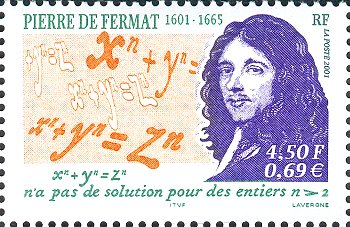

费马小定理的归纳法证明和应用
在数学的发展史上，皮埃尔·德·费马（Pierre de Fermat）是一位特别的人物。他的正式职业是律师，却格外爱好数学。虽然是业余的，费马在数学上的成就不低于同时代的职业数学家。他对于现代微积分、解析几何、概率论和数论都有贡献。尤其是在数论领域，费马最有兴趣也成果最突出。
作为“业余数学家之王”，费马提出了一些著名的数论上的论断，但却没有给出强有力的证明。最著名的莫过于费马大定理1。尽管费马声称他已找到一个精妙的证明，只是页边没有足够的空位写下来，但实际上历经350多年数学家们的不懈努力，直至1995年才由英国数学家安德鲁·怀尔斯（Andrew John Wiles）和其学生理查·泰勒（Richard Taylor）发布广为认可的证明。
邮票上的费马和费马大定理
与之相区别地，还有一个费马小定理。1640年10月，费马在一封给友人的信中第一次写下了与下面同义的文字：
如果 \(p\) 是素数且 \(a\) 是任意不可被 \(p\) 整除的整数, 那么 \(a^{p−1}−1\) 可被 \(p\)整除。
同样地，费马也没有在信中给出证明。将近百年后，完整的证明第一次由大数学家欧拉于1736年公开发表。而后来，人们从另一位大数学家莱布尼茨未发表的手稿中，发现他在1683年以前已经得到几乎是相同的证明。
费马小定理是初等数论的一个基本结论。这一定理可以用来生成素数判定法则和相应验证算法。进入20世纪七十年代末，公钥密码学兴起，费马小定理辅助证明了RSA加密算法的正确性。之后，研究者将其与中国余数定理相结合，还发现了一种RSA快速解密方法。以下对这些作一些展开介绍。
定理和推论
费马小定理的完整表述是：设定 \(\pmb{p}\) 为素数，对于任意整数 \(\pmb{a}\)，\(\pmb{a^p−a}\) 是 \(\pmb{p}\) 的倍数，用模算数等式表示为 \(\pmb{a^p\equiv a\pmod p}\)，如果 \(\pmb{a}\) 不是 \(\pmb{p}\) 的倍数，则有 \(\pmb{a^{p-1}\equiv 1\pmod p}\)。
从 \(a^{p-1}\equiv 1\pmod p\) 可以推导出 \(\pmb{a^{p-2}\equiv a^{-1}\pmod p}\)，这个新的同余等式正好给出了求 \(a\) 对同余 \(p\) 之模逆元的一种方法。这是费马小定理的一个直接推论。
另一个重要的推论是：如果 \(\pmb{a}\) 不是 \(\pmb{p}\) 的倍数且 \(\pmb{n=m\bmod {(p-1)}}\)，那么 \(\pmb{a^n\equiv a^m\pmod p}\)。这一推论看起来不是很直观，但其实证明很简单：
- 因为 \(n=m\bmod {(p-1)}\)，得出 \(m = k⋅(p-1)+n\)
- 将第一步的结果代入幂运算，\(a^m=a^{k⋅(p-1)+n}=(a^{(p-1)})^k⋅a^n\)
- 再代入模幂运算，并依据费马小定理，\(a^m=(a^{(p-1)})^k⋅a^n\equiv (1)^ka^n\equiv a^n\pmod p\)
- 所以 \(a^n\equiv a^m\pmod p\)，证毕。
归纳法证明
有多种方法证明费马小定理，其中基于二项式定理的数学归纳法最为直观。首先，对于 \(a=1\)，很显然 \(1^p \equiv 1\pmod{p}\) 成立。现在假设 \(a^p \equiv a \pmod{p}\) 为真，只要在此条件下证明 \((a+1)^p\equiv a+1\pmod{p}\)，则命题成立。
根据二项式定理 \[(a+1)^p = a^p + {p \choose 1} a^{p-1} + {p \choose 2} a^{p-2} + \cdots + {p \choose p-1} a + 1\] 其中二项式系数的定义为 \({p \choose k}= \frac{p!}{k! (p-k)!}\)。注意到因为 \(p\) 为素数，对于 \(1 \le k \le p-1\)，每个系数 \({p \choose k}\) 都是 \(p\) 的倍数。
这样再取模\(\bmod p\)，所有的中间项都消失了，只剩下 \(a^p+1\)， \[(a+1)^p \equiv a^p + 1 \pmod{p}\] 依据前面的假设 \(a^p \equiv a\pmod{p}\)，得出 \((a+1)^p \equiv a+1 \pmod{p}\)，证毕。
定理应用
竞赛题解
费马小定理为一些看似繁杂的计算问题提供了简明的解法。先看一个简单的例子：如果今天是星期日，问 \(2^{100}\) 天以后是星期几？一周有 7 天，根据费马小定理有 \(2^{7−1}≡1\bmod 7\)，由此可以得到 \[2^{100}=2^{16×6+4} ≡ 1^{16}×2^4≡16≡2\pmod 7\] 所以答案是星期二。这实际上就是以具体的数字重复了上面第二个推论的证明过程。运用此推论可以极大地加快模幂运算，比如要求计算 \(49^{901}\bmod 151\)，由于 \(901\bmod(151-1)=1\)，据此马上可以得出 \[49^{901}\equiv 49^1\equiv 49\pmod {151}\] 这当然比将 \(901\) 转化为二进制数再应用平方模幂运算快得多。
现在看一道似乎难一点的题：给定等式 \(133^5+110^5+84^5+27^5=n^{5}\)，求 \(n\) 的数值。
初看起来好像没有头绪，那就从基础的奇偶性检查开始。等式左边两项为奇两项为偶，所以总和为偶数，这也决定了\(n\)一定为偶数。再看指数\(5\)为一个素数，联想到费马小定理得出 \(n^5≡n\pmod 5\)，因此 \[133^5+110^5+84^5+27^5≡n\pmod 5\] \[3+0+4+2≡4≡n\pmod 5\] 继续再对\(3\)取模，同样依据费马小定理的推论有 \(n^5≡n^{5\mod(3-1)}≡n\pmod 3\)，所以 \[133^5+110^5+84^5+27^5≡n\pmod 3\] \[1+2+0+0≡0≡n\pmod 3\] 好了，到此总结一下：
- \(n\) 应该大于\(133\)，且 \(n\) 为偶数
- \(n\) 为\(3\)的倍数，因此所有数位相加为\(3\)的倍数
- \(n\) 除以\(5\)余\(4\)，个位应为\(4\) (\(9\)不满足偶数条件)
综合得出 \(n = 144\) 或 \(n\geq 174\)，显然 174 太大了，所以 \(n\) 只能是 \(\boxed{144}\)。
此题实际上出现在1989年美国数学邀请赛中，这是一项面向中学生的数学竞赛。有趣的是，题目的解答正好反证了欧拉猜想不成立。
素性检测
许多加密算法的应用需要“随机”的大素数，而大素数的生成，常用的方法是随机生成一个整数，然后对其进行素性测试。 由于费马小定理成立的前提条件是 \(p\) 为素数，这就提供了一种素数判定法则，称为费马素性检验。检验的算法为：
输入：\(n\) - 需要检验的数，\(n>3\)；\(k\) - 检验重复次数
输出：\(n\)是合数，否则可能是素数
重复\(k\)次：
\(\quad\quad\)在\([2, n − 2]\)范围内随机选取 \(a\)
\(\quad\quad\)如果 \(a^{n-1}\not \equiv 1{\pmod n}\)，返回合数
返回可能是素数
可以看出，费马素性检验并非确定性的，它利用随机化算法判断一个数是合数还是可能是素数。输出为合数时，结果一定正确；但是那些检验出可能为素数的数，也许实际为合数，这样的数被称为费马伪素数。最小的费马伪素数是\(341\)，\(2^{340}\equiv1\pmod {341}\)，而 \(341=11×31\)。所以事实上，费马小定理给出的是关于素数判定的必要但不充分条件。只能说检验重复次数越多，则被检验数是素数的概率越大。
还有一类费马伪素数 \(n\)，它们本身为合数，但是对于所有跟之互素的整数 \(x\)，都满足费马小定理 \(x^{n-1}\equiv 1\pmod n\)。数论上称它们为卡迈克尔数 (Carmichael number) 或绝对伪素数。最小的卡迈克尔数是 \(561\)，等于 \(3\times11\times17\)。卡迈克尔数可能骗过费马素性检验，使得检验变得不可靠。幸好这样的数很稀少，统计表明，在前\(10^{12}\)个自然数中只有\(8241\)个卡迈克尔数。
加密通讯程序PGP在算法当中使用了费马素性检验。在需要大素数的网络通信应用中，常常先用费马素性检验方法作预测试，而后调用效率更高的米勒-拉宾素性测试 (Miller–Rabin primality test) 以保证高准确度。
证明RSA算法
费马小定理也可以用来证明RSA加密算法的正确性，即解密计算公式可以完整无误地从密文 \(c\) 还原出明文 \(m\)： \[c^d=(m^{e})^{d}\equiv m\pmod {pq}\] 这里 \(p\) 和 \(q\) 为不同的素数，\(e\) 和 \(d\) 是满足 \(ed≡1\pmod {λ(pq)}\) 的正整数，而 \(λ(pq)=lcm(p − 1, q − 1)\)，\(lcm\) 为最小公倍数函数。
在证明开始前，先介绍一个中国余数定理的推论：如果整数 \(\pmb{n_1,n_2,...,n_k}\) 两两互素，并且 \(\pmb{n=n_{1}n_{2}...n_{k}}\)，那么对于任意整数 \(\pmb x\) 和 \(\pmb y\)，当且仅当 \(\pmb{x≡y\pmod{n_i}}\) 对每个 \(\pmb{i=1,2,...k}\) 都成立时，有 \(\pmb{x≡y\pmod n}\)。这个推论的证明不难，可留待读者思考解答2。依据此推论，如果 \(m^{ed}≡m\pmod p\) 和 \(m^{ed}≡m\pmod q\) 都为真，则一定有 \(m^{ed}≡m\pmod{pq}\)。
现在看证明的第一步，从 \(e\) 和 \(d\) 的关系得到 \(ed-1\) 可以被 \(p-1\) 和 \(q-1\) 整除，即存在非负整数 \(h\) 和 \(k\) 满足等式：\[ed-1=h(p-1)=k(q-1)\]
第二步目标 \(m^{ed}≡m\pmod p\)，考虑两种情况：
- 如果 \(m≡ 0\pmod p\)，即 \(m\) 是 \(p\) 的整数倍，自然 \(m^{ed}≡0≡m\pmod p\)
- 如果 \(m\not \equiv 0\pmod p\)，则可以推导出 \[m^{ed}=m^{ed-1}m=m^{h(p-1)}m=(m^{p-1})^{h}m\equiv 1^{h}m\equiv m{\pmod {p}}\] 这里应用了费马小定理 \(m^{p−1}≡1\pmod p\)
第三步目标 \(m^{ed}≡m\pmod q\)，和上一步的推导过程相似，一样可得出
- 如果 \(m≡ 0\pmod q\)，即 \(m\) 是 \(q\) 的整数倍，自然 \(m^{ed}≡0≡m\pmod q\)
- 如果 \(m\not \equiv 0\pmod q\)，则可以推导出 \[m^{ed}=m^{ed-1}m=m^{k(q-1)}m=(m^{q-1})^{k}m\equiv 1^{k}m\equiv m{\pmod {q}}\]
既然 \(m^{ed}≡m\pmod p\) 和 \(m^{ed}≡m\pmod q\) 都被证实，\(m^{ed}≡m\pmod{pq}\) 成立，证毕！
加速RSA解密
费马小定理和中国余数定理相结合，不仅可以验证RSA加密算法的正确性，还能推演出一种加速解密的方法。
RSA加密算法里模数\(N\)是两个素数\(p\)和\(q\)的乘积，所以对于小于\(N\)的任何数\(m\)，设定 \(m_1=m\bmod p\) 和 \(m_2=m\bmod q\)，则\(m\)由\((m_1,m_2)\)唯一确定。根据中国余数定理，我们可以使用通解公式从\((m_1,m_2)\)推算出\(m\)。因为\(p\)和\(q\)各自的比特数只有\(N\)的一半，模运算将比直接计算\(c^d\equiv m\pmod N\)快得多。而在计算\((m_1,m_2)\)的过程中，应用费马小定理的推论得到： \[\begin{align} m_1&=m\bmod p=(c^d\bmod N)\bmod p\\ &=c^d\bmod p=c^{d\mod(p-1)}\bmod p\tag{1}\label{eq1}\\ m_2&=m\bmod q=(c^d\bmod N)\bmod q\\ &=c^d\bmod q=c^{d\mod(q-1)}\bmod q\tag{2}\label{eq2}\\ \end{align}\] 很明显，在上面\((1)\)和\((2)\)式里，指数从\(d\)分别降阶到 \(d_P=d\bmod (p-1)\) 和 \(d_Q=d\bmod (q-1)\)，这进一步加快运算。最后，计算\(m\)的步骤再运用加纳算法3(Garner Algorithm)优化： \[\begin{align} q_{\text{inv}}&=q^{-1}\pmod {p}\\ h&=q_{\text{inv}}(m_{1}-m_{2})\pmod {p}\\ m&=m_{2}+hq\pmod {pq}\tag{3}\label{eq3} \end{align}\] 注意到给定\((p,q,d)\)，就确定了\((d_P,d_Q,q_\text{inv})\)的数值，所以可以预先算出它们保存好，解密时只要计算\((m_1,m_2,h)\)代入到以上的\((3)\)式就行了。
这其实正是RSA密码技术规程 RFC 8017 (PKCS #1 v2.2) 所指定的解密算法，该规程定义的ASN.1格式的密钥数据序列与上面描述的完全对应 (\(d_P\) - exponent1，\(d_Q\) - exponent2，\(q_{\text{inv}}\) - coefficient)：
1 | RSAPrivateKey ::= SEQUENCE { |
广泛应用的开源软件库包OpenSSL实现了这种高效实用的解密算法。如下所示，用OpenSSL命令行工具产生的密钥数据与PKCS #1标准一致：
1 | # Generate 512-bit RSA keys saved in PEM format file. |
也被称为“费马猜想”，其概要为：当整数\(n > 2\)时，关于\(x,y,z\)的不定方程 \(x^{n}+y^{n}=z^{n}\) 无正整数解。在1995年被最终证明其正确性之后，它就被称为“费马最后的定理”。↩︎
提示：如果两个数同余，那么它们之间的差值一定可以整除模数。↩︎
Garner, H., "The Residue Number System", IRE Transactions on Electronic Computers, Volume EC-8, Issue 2, pp.140-147, DOI 10.1109/TEC.1959.5219515, June 1959↩︎